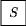

| Gate |
Symbol |
Matrix |
Operation |
| Pauli-X |
|
|
Flips the bit. Equivalent to the classic \( NOT \) gate |
| Pauli-Y |
|
|
Converts \( \ket{0} \) to \( i \ket{1} \) and \( \ket{1} \) to \( -i \ket{0} \) |
| Pauli-Z |
|
|
Does not act on \( \ket{0} \) and flips \( \ket{1} \) to \( - \ket{1} \) |
| Phase |
 |
|
Does not act on \( \ket{0} \) and converts \( \ket{1} \) to \( i \ket{1} \) |
| \( \pi / 8 \) |
 |
|
Making our qubit converge to 0 or 1 to give our final output value |
| Phase \(^\dagger \) |
|
 |
Find more information on this topic here |
| \( \pi / 8 ^\dagger \) |
 |
 |
Find more information on this topic here |